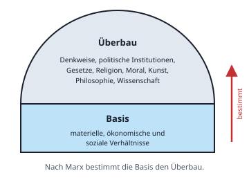

Klassentheorie nach Marx
Mit einem KI-Tutor lernen
Ein KI-Tutor erklärt dir diese Seite und hilft dir bei den Aufgaben. Wähl deinen Assistenten:
Mit Claude öffnen Mit ChatGPT öffnen Mit Mistral Vibe öffnen
Du nutzt dein eigenes Konto beim Anbieter. Der Assistent ist kein Angebot von lernapps.net: lernapps liefert nur Inhalte und Aufgaben. Die Wahl gilt für alle Seiten, nur auf diesem Gerät.
Kurz ausprobiert
Nach dieser Seite kannst du die Klassentheorie von Marx und das Modell von Basis und Überbau erläutern.
Die ganze Gesellschaft spaltet sich mehr und mehr in zwei große feindliche Lager, in zwei große, einander direkt gegenüberstehende Klassen: Bourgeoisie und Proletariat.
Aufgabe
Lösung
der Besitz an Produktionsmitteln richtige Antwort
Die Bourgeoisie besitzt Fabriken und Maschinen, das Proletariat nur seine Arbeitskraft.
die Geburt in einen Stand
Das gilt für die Ständegesellschaft des Mittelalters.
der Lebensstil und die Werte
Lebensstil und Werte stehen bei den Milieus im Mittelpunkt.
Wer die Produktionsmittel besitzt, gehört zur Bourgeoisie; wer seine Arbeitskraft verkaufen muss, zum Proletariat.
Das steckt dahinter
- Karl Marx
1818–1883, geboren in Trier. 1848 schrieb er mit Engels das „Manifest der Kommunistischen Partei“, ab 1849 lebte er im Exil in London, 1867 erschien „Das Kapital“.
Die Lohnarbeiter müssen ihre Arbeitskraft verkaufen. Konkurrenz und Lohndruck machen die Kapitalisten reicher und die Arbeiter ärmer. Am Ende steht – so Marx – die Revolution.

Basis und Überbau. Der Pfeil zeigt, was was bestimmt.
Quelle: eigene Zeichnung. Lizenz: CC-BY-4.0.Merke
- Zwei Klassen: Bourgeoisie (besitzt) und Proletariat (verkauft Arbeitskraft).
- Gegensätzliche Interessen → Klassenkampf → Revolution.
- Die Basis bestimmt den Überbau: „Das Sein bestimmt das Bewusstsein.“
Jetzt du
Aufgabe
Lösung
Richtige Antwort: 1. Die Lohnarbeiter müssen ihre Arbeitskraft an die Besitzer verkaufen., 2. Konkurrenz und Lohndruck führen zur Verelendung der Arbeiter., 3. Die Arbeiter werden sich ihrer Lage bewusst und organisieren sich., 4. Im Klassenkampf beseitigt eine Revolution das Privateigentum an Produktionsmitteln.
Abhängigkeit → Verelendung → Klassenbewusstsein → Klassenkampf und Revolution.
Aufgabe
Lösung
Gesetze richtige Antwort
Gesetze sind Teil des Überbaus – sie spiegeln die Verhältnisse der Basis.
Religion und Moral richtige Antwort
Auch Religion und Moral rechnet Marx zum Überbau.
die Besitzverhältnisse an Fabriken
Besitzverhältnisse sind ökonomische Verhältnisse – also die Basis.
die Arbeitsbedingungen in der Produktion
Wie produziert wird, gehört zu den materiellen Verhältnissen der Basis.
Überbau ist alles Geistige und Politische; die Basis ist die Wirtschaft.
Aufgabe
Lösung
Richtige Antwort: Die Aussage stimmt nicht.
Umgekehrt – die ökonomische Basis bestimmt den Überbau. „Das Sein bestimmt das Bewusstsein.“
Offene Aufgabe
Begründe in 2 Stichpunkten, inwiefern die Klassentheorie von Marx ein interessengeleitetes Modell ist.
Eine gute Antwort enthält:
Lösung
- Interessengeleitet, weil Marx den Kapitalismus überwinden wollte: Das Manifest rief die Arbeiter zum Kampf auf.
- Er vereinfacht auf zwei Klassen, weil der Gegensatz die Revolution begründen soll.
Als Nächstes: Ist Deutschland heute wieder eine Klassengesellschaft?
Fehler gefunden oder eine Idee für diese App?